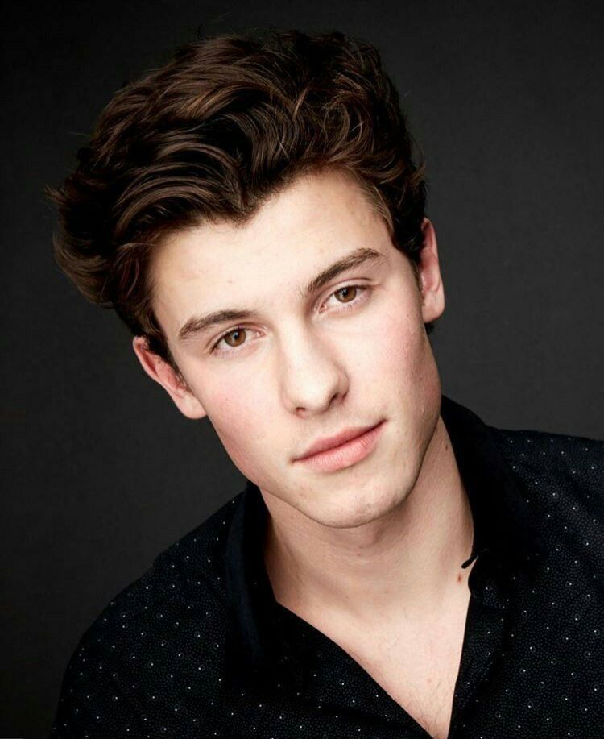

Bandas
Como vocês estão vendo eu gosto de vários estilos de músicas, não só de bandas mas também de outros artistas.
Os artista que eu mais amo ouvir são:
Melim: Melim é um trio musical brasileiro formado pelos irmãos Diogo Melim, Gabriela Melim e Rodrigo Melim. Interessados por música desde a infância, os irmãos tinham projetos separados antes de se juntarem para formar a banda. Em 2016, participaram da terceira temporada do reality show musical Superstar, da Rede Globo, e terminaram a competição como semifinalistas. No ano seguinte, assinaram um contrato com a Universal Music e lançaram o extended play (EP) Melim, que inclui o single "Meu Abrigo". Em 2018, o trio lançou seu álbum de estreia homônimo.

Shawn Mendes: Shawn Peter Raul Mendes (Toronto, 8 de agosto de 1998) é um cantor e um músico canadense, de origem portuguesa e britânica. Seu single de estreia, "Life of the Party", o fez o artista mais jovem a estrear entre as 25 primeiras posições da Billboard Hot 100. O seu álbum de estreia, Handwritten, lançado em 14 de abril de 2015, chegou logo em primeiro lugar na Billboard 200, consagrando-o como um dos artistas mais jovens a conseguir esse feito.
Isadora Pompeo:Isadora Pompeo é uma vlogger brasileira, cantora e compositora de música cristã. Ela lançou seu primeiro álbum de estúdio, Pra Te Contar os Meus Segredos, produzido por Hananiel Eduardo em 2017.

Lady Gaga: Stefani Joanne Angelina Germanotta, mais conhecida pelo nome artístico Lady Gaga, é uma cantora, compositora, atriz e produtora musical estadunidense. Ela começou a apresentar-se no cenário musical de rock no Lower East Side em 2003, e mais tarde matriculou-se na Tisch School of Arts da Universidade de Nova Iorque.